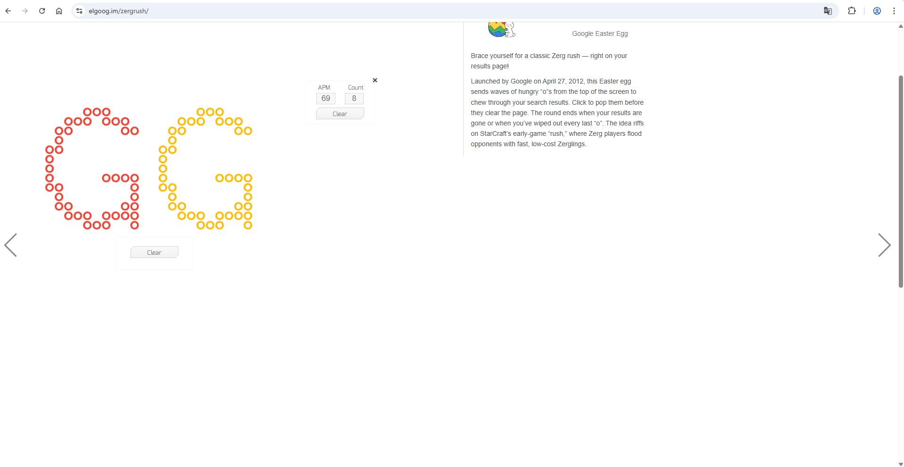

Comment activer Zerg Rush ?
- Rends-toi sur Google.
- Tape "Zerg Rush" dans la barre de recherche.
- Clique sur "Recherche Google" ou appuie sur Entrée.
- Attends que les "O" envahissent l’écran, puis clique sur eux pour les éliminer !
Essaye Zerg Rush maintenant !
